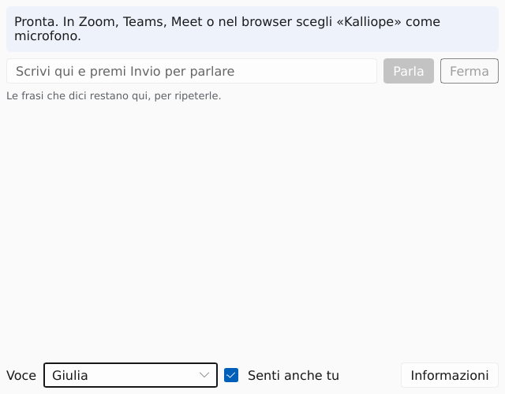

Passo 4 di 5: In riunione
Usalo in una riunione
Kalliope è un microfono. Nell'app della riunione lo scegli come scegli un microfono vero. Qui ci sono i passi e i modi per controllare che ti sentano.
Non ancora provato in una riunione vera
La voce arriva fino al microfono «Kalliope». Con Zoom, Teams o Meet su un computer di tutti i giorni non l'abbiamo ancora provata. Prima di una riunione importante fai una prova con una persona di fiducia. Vedi la tabella app per app.
-
Apri Kalliope e aspetta «Pronta»
Apri Kalliope prima di entrare nella riunione. Aspetta che la riga in alto dica «Pronta».

La finestra di Kalliope: la riga di stato in alto, il campo dove scrivi con «Parla» e «Ferma», in basso la voce e «Senti anche tu». Come sai che è andata beneLa riga dice: «Pronta. In Zoom, Teams, Meet o nel browser scegli «Kalliope» come microfono.»Se non è andataSe dice «La voce è pronta, ma …» o un'altra frase, cercala nella pagina Aiuto. -
Scegli «Kalliope» come microfono
Apri le impostazioni audio dell'app della riunione e scegli «Kalliope» fra i microfoni.
In Zoom: Impostazioni, Audio, Microfono, «Kalliope».
Per le altre app non descriviamo i menu: ognuna è diversa e non le abbiamo provate. Cerca le impostazioni audio. In un browser, scegli il microfono nella richiesta del browser o nella pagina della riunione.
Kalliope diventa il microfono predefinito del computer solo se è l'unico. Altrimenti scegli «Kalliope» in ogni app.
Come sai che è andata bene«Kalliope» compare nell'elenco, accanto ai microfoni veri, e resta scelto.Se non è andataSe «Kalliope» non compare: Kalliope deve essere aperto prima. Poi chiudi e riapri l'elenco dei microfoni dell'app. Se non basta, leggi la spiegazione. -
Controlla che ti sentano
Hai tre modi. Il primo è il più semplice, il terzo il più sicuro.
1. La finestra ti avvisa
Cosa fare. Togli la spunta da «Senti anche tu». Scrivi una frase e premi Invio.
Come sai che è andata. Se compare «Nessuna chiamata sta usando il microfono «Kalliope»…», nessuna app ti ascolta. Se non compare, una app ti ascolta.
Così dice il programma. Non l'abbiamo provato in una riunione vera.
2. La barra dell'app
Cosa fare. Apri la prova del microfono dell'app, se ce l'ha. Scrivi una frase.
Come sai che è andata. La barra del livello si muove mentre Kalliope parla.
3. Una prova con una persona
Cosa fare. Prima di una riunione importante, entra in una chiamata con una persona di fiducia. Scrivi una frase.
Come sai che è andata. La persona ti dice cosa sente.
«Senti anche tu» fa sentire la voce anche sulle casse del tuo computer. Serve a te per sapere cosa esce. Non vuol dire che l'app della riunione la riceva.
Da terminale, senza la finestra
Con la finestra chiusa,
kalliope --say "prova"fa dire «prova» al microfono «Kalliope». Non l'abbiamo provato con la finestra aperta nello stesso momento. -
Scrivi e parla
Scrivi nel campo e premi Invio, o premi «Parla». «Ferma» interrompe subito il suono e svuota la coda. Se scrivi mentre Kalliope parla, il nuovo testo si mette in coda.
Le frasi già dette restano in un elenco, la più recente in alto. Un clic su una frase la ripete. L'elenco sparisce quando chiudi la finestra.
La finestra di Kalliope e quella della riunione sono due finestre. Kalliope non ha scorciatoie da tastiera che funzionino fuori dalla sua finestra: per scrivere devi passare a quella di Kalliope. Per chi scrive con un solo interruttore o con lo sguardo non abbiamo provato come funziona in una riunione.
Come per un microfono vero, le frasi dette mentre nessuna app registra vengono scartate. Così una riunione non comincia con parole vecchie.